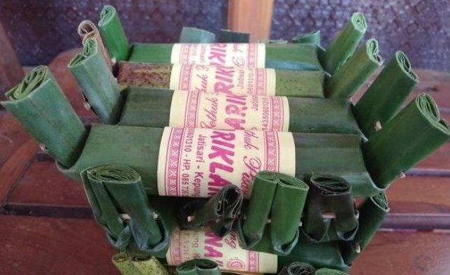
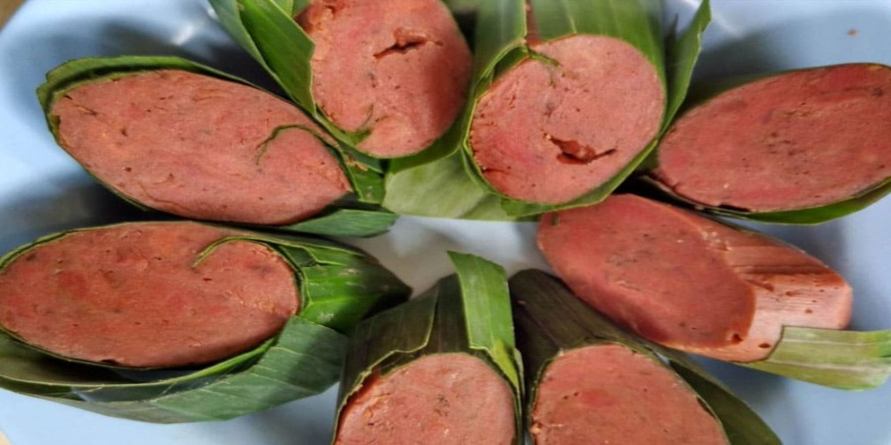

Gethuk Pisang
Dari empat baris lirik lagu doalanan ini, kita semua (umumnya orang Jawa) sudah memahami bahwa Gethuk adalah makanan tradisional khas Jawa yang berbahan dasar dari ketela pohon. Gethuk pisang yang belum diketahui pasti asal muasal pengolahannya, namun kebanggaan tersendiri bagi warga Kediri. Karena gethuk pisang telah diyakini oleh warga sekitar mengingat makanan tradisional ini telah ada sejak zaman kerajanaan Kediri.

Pembuatan gethuk pisang
Resep Getuk Pisang Khas Kediri Sederhana Spesial Asli Enak. Getuk (bahasa Jawanya: gethuk) adalah makanan ringan yang terbuat dengan bahan utama ketela pohon atau singkong, ubi, talas, dan pisang. Pembuatan kue getuk dimulai dari singkong di kupas kemudian kukus atau perebusan, setelah matang kemudian ditumbuk atau dihaluskan dengan cara digiling lalu diberi pemanis gula dan pewarna makanan. Untuk penghidangan biasanya ditaburi dengan parutan buah kelapa.

Manfaat gethuk pisang
Kandungan gizi pada "Getuk pisang" yang termasuk tinggi dan cukup tinggi adalah kandungan energi, karbohidrat, karoten total, tiamina. Berdasarkan kandungan gizi yang tinggi dan cukup tinggi tersebut, secara ringkas, manfaat dan khasiatnya pada: Sistem Peredaran Darah, Sistem Saraf dan Otak, Sistem Kekebalan Tubuh, dan masih banyak lagi.
Home